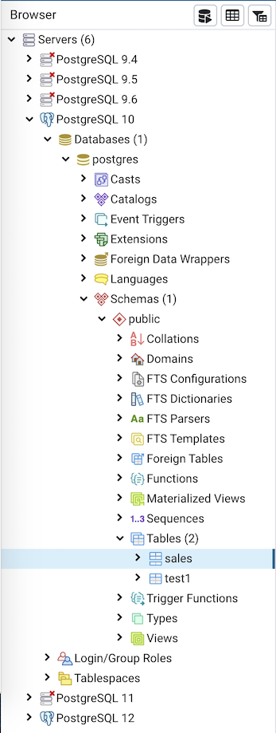

Tree Control¶
The left pane of the main window displays a tree control (the pgAdmin tree control) that provides access to the objects that reside on a server.
You can expand nodes in the tree control to view the database objects that reside on a selected server. The tree control expands to display a hierarchical view:
Use the plus sign (+) to the left of a node to expand a segment of the tree control.
Click the minus sign (-) to the left of a node to close that node.
You can also drag and drop certain objects to the Query Tool which can save time in typing long object names. Text containing the object name will be fully qualified with schema. Double quotes will be added if required. For functions and procedures, the function name along with parameter names will be pasted in the Query Tool.
Access context-sensitive menus by right-clicking on a node of the tree control to perform common tasks. Menus display options that include one or more of the following selections (options appear in alphabetical order):
Option |
Action |
|---|---|
Add named restore point |
Click to create and enter the name of a restore point. |
Backup… |
Click to open the Backup… dialog to backup database objects. |
Backup Globals… |
Click to open the Backup Globals… dialog to backup cluster objects. |
Backup Server… |
Click to open the Backup Server… dialog to backup a server. |
Connect Server… |
Click to open the Connect to Server dialog to establish a connection with a server. |
Create |
Click to access a context menu that provides context-sensitive selections. Your selection opens a Create dialog for creating a new object. |
CREATE Script |
Click to open the Query tool to edit or view the CREATE script. |
Debugging |
Click through to open the Debug tool or to select Set breakpoint to stop or pause a script execution. |
Delete/Drop |
Click to delete the currently selected object from the server. |
Disconnect Database… |
Click to terminate a database connection. |
Disconnect from server |
Click to disconnect from the currently selected server. |
Drop Cascade |
Click to delete the currently selected object and all dependent objects from the server. |
Debugging |
Click to access the Debugger tool. |
Grant Wizard |
Click to access the Grant Wizard tool. |
Maintenance… |
Click to open the Maintenance… dialog to VACUUM, ANALYZE, REINDEX, or CLUSTER. |
Properties… |
Click to review or modify the currently selected object’s properties. |
Refresh… |
Click to refresh the currently selected object. |
Reload Configuration… |
Click to update configuration files without restarting the server. |
Restore… |
Click to access the Restore dialog to restore database files from a backup. |
View Data |
Use the View Data option to access the data stored in a selected table with the Data Output tab of the Query Tool. |
The context-sensitive menus associated with Tables and nested Table nodes provides additional display options (options appear in alphabetical order):
Option |
Action |
|---|---|
Import/Export Data… |
Click open the Import/Export… dialog to import data to or export data from the selected table. |
Reset Statistics |
Click to reset statistics for the selected table. |
Scripts |
Click to open the Query tool to edit or view the selected script from the flyout menu. |
Truncate |
Click to remove all rows from a table. |
Truncate Cascade |
Click to remove all rows from a table and its child tables. |
View First 100 Rows |
Click to access a data grid that displays the first 100 rows of the selected table. |
View Last 100 Rows |
Click to access a data grid that displays the last 100 rows of the selected table. |
View All Rows |
Click to access a a data grid that displays all rows of the selected table. |
View Filtered Rows… |
Click to access the Data Filter popup to apply a filter to a set of data. |